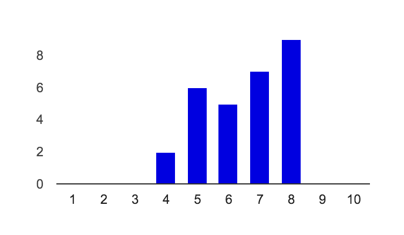
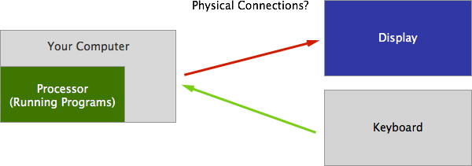
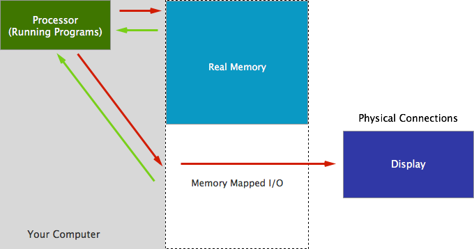
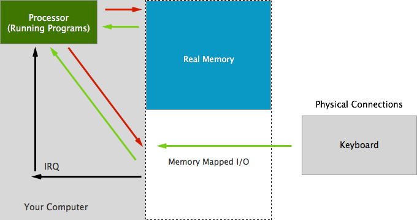

Peripherals
CS 1501 - Lecture 7
Thursday, October 8
Exam Statistics
29 Responses

General Notes
- More Interactive
- Handouts!
- Practical Examples
- Visuals!
- OS X
Exam Part II - Runoff
Single Transferrable Vote for bonus lecture. I'll list all the topics that more than two people listed.
Recap - Operating Systems
- Just a program that runs other programs.
- Using Interrupts (Timers)
- Scheduling
- Virtual Memory
The Story Thus Far
What we want...
“I don't know what peripherals is...but that sounds good!”
-- Official Midterm Data, 2015
Peripheral - An external device that provides input and output for the computer.
What's going on?

Name that Port!
Memory Mapped I/O - Output

Memory Mapped I/O - Input

Memory Mapping I/O
- Easy to build circuits.
- One interrupt line per peripheral (~10 supported).
- Each device is "assigned" a region of memory.
Some early microcomputing devices such as the Apple II sometimes required the end-user to physically cut some wires and solder others together to make configuration changes. The changes were intended to be largely permanent for the life of the hardware.
Dip Switches